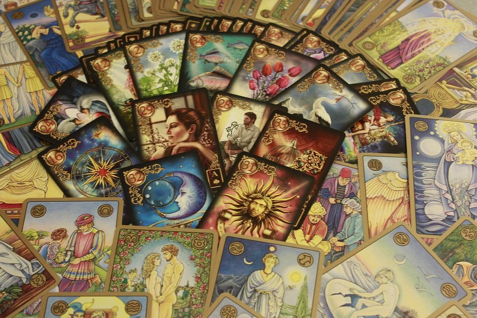
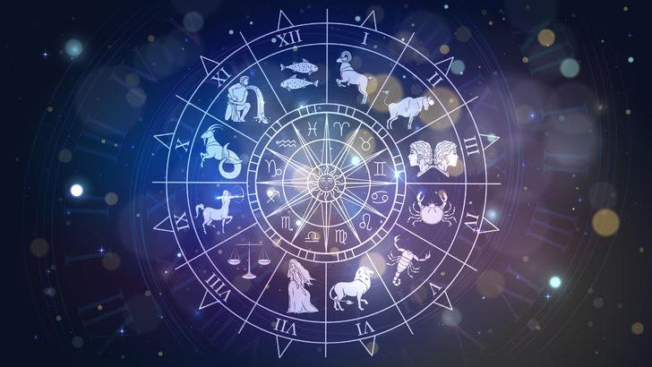
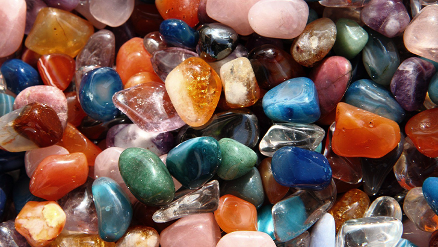
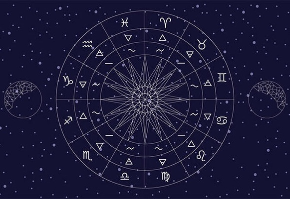

|  | KATİNA AŞK FALI Tamamen aşka yönelik olan bu fal çeşidi son dönemlerde oldukça sık tercih ediliyor ve danışanlar bu fal ile aşk hayatlarına dair her sorunun cevabını alıyor. Aşk hayatınızın nereye gideceği, partneriniz ile olan ilişkinizin nasıl ilerleyeceği, evliliğe dair bazı bilgiler ve nasıl biri ile aşk yaşayacağınıza dair detaylar bu fal çeşidinde gün yüzüne çıkarılır. Böylelikle danışanların aklında yer alan aşka dair karmaşık sorulara son verilir. |
|---|---|
|  | BURÇ YORUMU İnsanın doğum anında Güneş'in hangi pozisyonda olduğunu gösteren göksel bir alanın sembolik ifadesidir. Eğer doğduğunuz noktadan gökyüzüne, Güneş’e doğru hayali bir çizgi çizer ve bu çizgiyi sonsuza doğru uzatırsanız, bu çizginin bir burca ulaştığını görürsünüz. İşte bu gökyüzü alanı sizin burcunuzu ifade eder. Horoskop olarak çizdiğimiz göksel haritada 360 derecelik tam daire üzerinde 12 bölümdürler. |
|  | DOĞAL TAŞLAR Eski Mısır yazıtlarında doğal taşların iyileştirici şifa yönlerinden bahsedilmiştir. O zamandan beri hemen hemen bütün kültürlerde doğal taşlar aksesuar olarak kullanılmıştır. Doğal taşlar birçok ülkeden tedariği yapılan değerli taş gruplarıdır. |
|  | YILDIZ HARİTASI Yıldızlar , burçlar aracılığıyla aslında bize sınırsız bir içgörü sunar. Yıldız haritası,diğer adıyla doğum haritası,doğduğunuz andaki gökyüzünü görüntüsüdür. Bu hayatınız boyunca sabit kalır. Astroloji haritası temel yaşam dersleriniz için size ipuçları verebilir, kaderinizi gösterebilir ve kişilik özelliklerinizi ortaya çıkarmanın yanı sıra ruhunuzun amacına giden yolu bulmanıza yardımcı olabilir. |